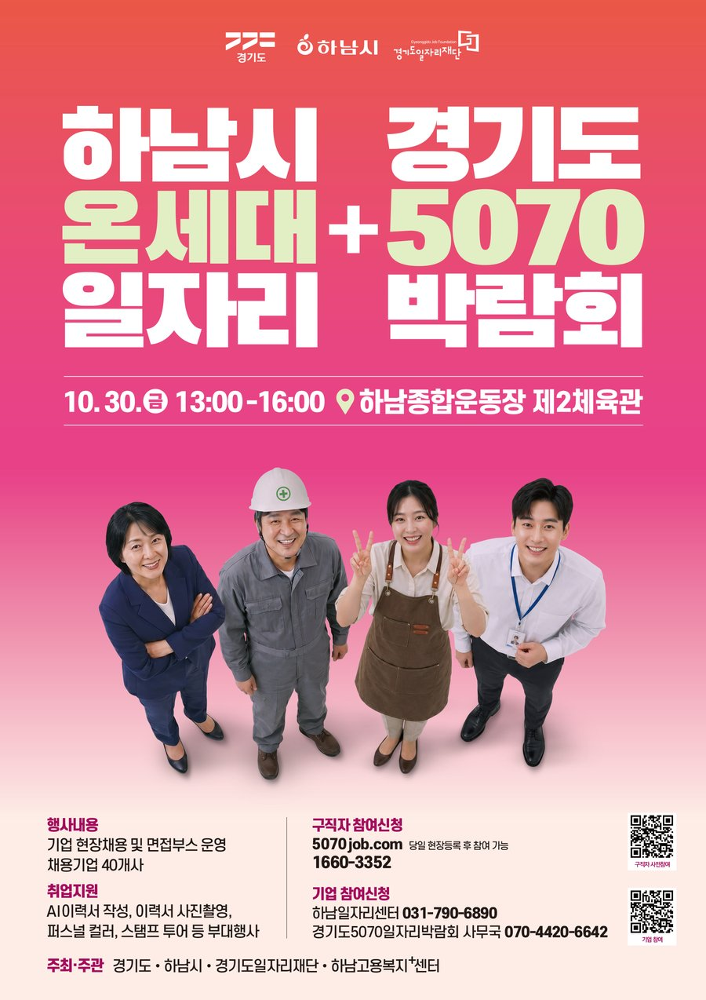

51호 | 2026년 10월 2일 발행
📌 이번 호 주요 목차
 우리동네 국회의원 이광재
우리동네 국회의원 이광재
📝 현장일지
이광재, "교산, 분당보다 좋은 도시로"… LH 교산 주민설명회 개최
이광재 의원이 LH 교산 주민설명회를 열었습니다. 이 의원은 서울 코앞에서 24평이 5.3억 원에 공급되는 것은 수십 년 그린벨트에 묶여 참고 살아오신 주민들 덕분인 만큼 그 혜택은 이곳에 살던 분들과 자녀분들이 먼저 누리셔야 한다며, 지역 주민 청약 비율을 지금보다 더 늘리겠다고 밝혔습니다. 또 집값의 20%만 먼저 내고 나머지는 적금 붓듯 갚아 가면 내 집이 되는 '지분주택'을 시범으로 추진해 청년과 형편이 넉넉지 않은 분들께 문을 하나 더 열겠다고 했습니다. 물량이 10%가 될지 15%가 될지는 더 봐야 하며 LH와 GH가 함께 뛰어야 하는 일이라고 설명했습니다. 철도는 박차를 가하고 있고, 연말에 예산과 법이 통과되면 주민 생계조합 설명회를 다시 열겠다고 약속했습니다. LH에는 "문턱 좀 낮춰 달라"고 요청했고, 객석에서 박수가 나왔습니다.
📌 출처: 이광재 공식 네이버 블로그
📰 언론보도
[국제뉴스] 이광재, 하남 교산지구 주민설명회서 '지분주택 시범 추진' 발표
이광재 더불어민주당 의원(경기 하남시갑)이 1일 오전 하남벤처센터에서 하남 교산지구 주민들을 대상으로 설명회를 열고, 지역 주민 청약 비율 확대와 지분주택 시범 추진, 주민생계조합 법제화 및 후속 설명회 개최를 약속했습니다. 이 의원은 24평 아파트가 5.3억 원에 공급되는 혜택은 오랜 기간 그린벨트로 묶여 있던 주민들의 희생 덕분이라며 지역 주민과 자녀들이 더 많이 입주할 수 있도록 청약 비율을 높이겠다고 밝혔습니다. 지분주택은 5.3억 원 중 20%만 먼저 내고 나머지는 적금처럼 나누어 갚는 구조로, 기존에 4억 원 가까운 대출을 한 번에 받아야 했던 부담을 덜어 줄 수 있다고 소개했습니다. 시범 물량 규모는 추후 협의를 통해 결정됩니다. 주민들은 이 의원이 대표발의한 '공공주택지구 원주민 생계지원법'(공공주택 특별법 일부개정법률안)에 환영의 뜻을 나타냈습니다. 이 법안은 원주민 재정착 지원대책을 의무화하고 직업전환훈련, 고용 추천, 주민생계조합의 소득창출사업 지원 등을 담고 있으며, 주민이 직접 법인이나 단체를 설립해 소득창출사업을 할 수 있도록 '주민생계조합'의 법적 근거도 마련했습니다. 이 의원은 연말쯤 예산과 법안이 통과되면 주민생계조합 설명회를 다시 열겠다고 말했습니다.
📌 출처: 국제뉴스 (강정훈 기자)
📰 하남 지역 주요 뉴스
📰 시정/재정
하남시, 재정난에도 예산 재편성 반복… 의회 삭감한 축제·음악분수 예산 재차 요구
경기 하남시가 시의회에서 삭감된 사업 예산을 추가경정예산안(추경)에 다시 편성하거나 대규모 사업비를 반복 요구해 재정 운용의 적정성에 의문이 제기되고 있습니다. 1일 시에 따르면 통합재정안정화기금은 2023년 초 1,640억 원에서 1,000억 원을 사용해 잔액이 약 640억 원으로 줄었고, 지난해에는 세수 부족을 이유로 기금 190억 원을 일반회계로 전입하고 하수도공기업 특별회계에서 180억 원을 예수했습니다. 같은 해 본예산 기준으로 감일복합커뮤니티센터(125억 원)와 미사3동 공공복합청사(49억 원) 등 174억 원 규모의 지방채 발행도 계획했습니다. 2026년 제1회 추경에서 일반회계 전출금과 망월천 수질개선 특별회계 사업비 각 28억 원이 삭감됐지만 제3회 추경에서 같은 규모가 다시 삭감됐고, 제4회 추경에서도 각 18억 원이 삭감되는 등 '삭감→추경 재편성→재삭감'이 반복됐다는 지적입니다. 지난 9월 제4회 추경 당시 예산결산위원장을 지낸 신선호 시의원은 "시는 예산 편성 단계부터 사업의 필요성과 집행 가능성을 제대로 검증했는지 설명해야 한다"고 말했습니다.
📌 출처: 데일리한국 (이성환 기자)
📰 치안/생활
감일 유관단체장, 파출소 신설 촉구 주민 서명 전달… 하남경찰서 "27년 예산 편성 시 빠른 신설 노력"
하남 감일 유관단체장들이 감일파출소 신설을 촉구하는 건의문과 주민 600여 명의 서명을 하남경찰서에 전달했습니다. 지난 30일 구교영 하남통장협의회장, 구본규 감일새마을협의회장, 이준구 감일지대장, 박진철 전 감일주민자치회장이 하남경찰서 민원실을 찾았습니다. 감일지구는 입주가 완료돼 인구가 4만 명에 이르고 영유아와 학생이 많은 신도시여서, 안전한 통학길과 유동인구 증가에 따른 치안 불안을 덜기 위해 뜻을 모았다는 설명입니다. 구교영 회장은 "하남감일은 미취학 아이들이 가장 많은 곳이며 6개의 초중고교가 있다"며 "아이들이 안심하고 다닐 수 있도록 하루빨리 파출소 신설이 추진되길 바란다"고 호소했습니다. 이 자리에 참석한 하남경찰서 경무과장과 범죄예방계장은 2027년 예산이 편성되면 빠른 신설이 되도록 하겠다고 답했습니다. 현재 감일지구초소는 2023년 1월 개소해 시가 운영비용을 부담하고 하남경찰서가 경찰 1명을 지원하고 있습니다.
📌 출처: 한스경제 (권영혜 기자)
💬 하남 맘카페 HOT 이슈
이번 주 하남 지역 맘카페(미사맘스클럽, 하남맘, 하남교산맘, 교산라이프 등)에서 많이 오르내린 HOT 이슈 TOP 3입니다.
1️⃣ [교산·주거] "지분주택, 우리도 해당될까?"… 교산 주민설명회 이후 분양 방향·본청약 일정에 관심 집중
현황: 하남교산맘에는 이번 주민설명회에서 교산지구를 대상으로 한 지분주택 시범 추진 계획이 발표됐다며, 내 집 마련을 꿈꾸는 무주택 실수요자에게 새로운 선택지가 될 수 있다는 글이 올라왔습니다. 같은 카페에는 교산 신도시 개발 방향을 두고 임대주택 비율이 너무 높게 치우치는 것 아니냐는 우려를 전하는 글도 올라왔고, 교산라이프에는 사전청약을 진행한 3기 신도시 사업지의 약 60%가 본청약 시기가 늦어졌으며 하남교산도 지연된 것 같다는 글이 올라왔습니다. 아영이네 행복주택 카페에는 교산 청약 자격을 위해 서울 이사를 고민하는 미사 거주자의 사연도 올라왔습니다.
💡 주민 포인트: 지분주택은 아직 시범 추진 단계로 물량과 세부 조건이 정해지지 않았습니다. 청약 자격과 거주 기간은 카페 글만 믿지 말고 LH·GH의 공식 공고를 확인하세요.
💬 주민 반응: "새로운 선택지가 생겨 반갑다"는 기대와 "본청약이 더 늦어지는 것 아니냐"는 걱정이 함께 오르내렸습니다.
📌 출처: 네이버 카페 (하남교산맘, 교산라이프, 아영이네 행복주택)
2️⃣ [보육·교육] "어린이집 계속 보낼까, 유치원으로 옮길까"… 맞벌이 가정의 원 선택·저녁 돌봄 고민
현황: 미사맘스클럽에는 5세 아이가 어린이집을 다니는데 11월에 유치원을 써볼까 한다며 맞벌이라 어린이집이 편하지만 주변에서는 유치원이 좋다고 해 고민이라는 글과 하남에서 추천할 만한 유치원을 묻는 글이 올라왔습니다. 졸업을 앞둔 7세 아이와 미사로 이사 오게 됐는데 명성어린이집과 구산유치원 중 어디가 남은 기간 다니기 좋을지 묻는 글, 맞벌이라 지금처럼 저녁 7시까지 봐주는 유치원이 있는지 묻는 글도 이어졌습니다.
💡 주민 포인트: 맞벌이 가정은 연장반·저녁 돌봄 운영 시간과 실제 이용 분위기를 원에 직접 문의해 확인하는 것이 안전합니다. 중간 전원이나 입소는 정원 상황이 원마다 다르니 전화로 빈자리를 먼저 알아보세요.
💬 주민 반응: 원별 장단점과 연장반 이용 경험을 묻고 나누는 글이 이어졌습니다.
📌 출처: 네이버 카페 (미사강변도시 미사맘스클럽)
3️⃣ [초등·돌봄] "1학년 방과후 돌봄교실, 넣을까 학원으로 돌릴까"… 입학 후 아이 적응 고민
현황: 하남맘에는 감일동 초등 1학년 방과후 돌봄교실 신청을 두고 고민된다는 글이 올라왔습니다. 선배맘들 이야기를 들어보면 1학년 때는 돌봄교실에 있는 게 마음 편하다는 분도 있고, 아이가 지루해해 일찍 학원을 돌리는 게 낫다는 분도 있어 감일동 학교들의 분위기를 묻는 내용입니다. 돌봄 프로그램이 알차게 운영되는지, 방과후 단품 수업 뒤 학원으로 연계하는 편이 적응에 나을지 조언을 구했습니다. 미사맘스클럽에서도 미사 내 초등학교 전학, 초등 입학금 사용처를 묻는 글이 올라왔습니다.
💡 주민 포인트: 돌봄교실 운영 방식과 신청 조건은 학교마다 다릅니다. 선배맘 후기와 함께 해당 학교의 공식 안내를 확인하고, 아이의 성향과 하교 후 동선에 맞춰 정하세요.
💬 주민 반응: 아이 성향에 따라 선택이 갈린다는 경험담 중심의 조언 글이 이어졌습니다.
📌 출처: 네이버 카페 (하남맘, 미사강변도시 미사맘스클럽)
🎭 ALL IN 하남라이프
2026년 10월 2일 기준 한눈에 보는 하남시 최신 문화·행사·교육 안내 가이드
💼 2026.10.30(금) 13:00~16:00 | 일자리박람회
「하남시 온세대 + 경기도 5070 일자리박람회」
"기업 40개사 현장채용, AI 이력서 작성부터 사진촬영까지"
경기도와 하남시가 여는 일자리박람회입니다. 기업 현장채용과 면접부스를 운영하며 취업 지원 부대행사도 함께 열립니다.
🗓 일시: 2026년 10월 30일(금) 13:00 ~ 16:00
📍 장소: 하남종합운동장 제2체육관
🏢 행사내용: 기업 현장채용 및 면접부스 운영, 채용기업 40개사
🎁 취업지원: AI 이력서 작성, 이력서 사진촬영, 퍼스널 컬러, 스탬프 투어 등 부대행사
📝 구직자 참여: 5070job.com (당일 현장등록 후 참여 가능) / 1660-3352
🏭 기업 참여: 하남일자리센터 031-790-6890 / 경기도5070일자리박람회 사무국 070-4420-6642
🤝 주최·주관: 경기도·하남시·경기도일자리재단·하남고용복지+센터
경기도와 하남시가 여는 일자리박람회입니다. 기업 현장채용과 면접부스를 운영하며 취업 지원 부대행사도 함께 열립니다.
🗓 일시: 2026년 10월 30일(금) 13:00 ~ 16:00
📍 장소: 하남종합운동장 제2체육관
🏢 행사내용: 기업 현장채용 및 면접부스 운영, 채용기업 40개사
🎁 취업지원: AI 이력서 작성, 이력서 사진촬영, 퍼스널 컬러, 스탬프 투어 등 부대행사
📝 구직자 참여: 5070job.com (당일 현장등록 후 참여 가능) / 1660-3352
🏭 기업 참여: 하남일자리센터 031-790-6890 / 경기도5070일자리박람회 사무국 070-4420-6642
🤝 주최·주관: 경기도·하남시·경기도일자리재단·하남고용복지+센터

📌 출처: 하남시·경기도·경기도일자리재단 (행사 포스터)
🎓 2026.10.06(화) ~ 10.20(화) | 장학생 모집
2026년 하반기 하남교육재단 장학생 선발
"하남시 대학생이라면 신청기간 중 24시간 신청 가능"
하남교육재단이 2026년 하반기 장학생을 선발합니다.
🗓 신청기간: 2026년 10월 6일(화) ~ 10월 20일(화) (기간 내 24시 신청가능)
👥 신청대상: 하남시 대학생 — 공고일 현재 2년 이상 하남시에 주소를 두고 계속 거주하고 있는 시민 또는 시민의 자녀
🚫 제외대상: 휴학·유학예정자, 정규학기 초과자, 졸업유예자, 학점은행제 대학, 직장인 대학생(산업체위탁생)
📝 신청: 포스터 QR코드 또는 하남교육재단 홈페이지(hedu.or.kr)
하남교육재단이 2026년 하반기 장학생을 선발합니다.
🗓 신청기간: 2026년 10월 6일(화) ~ 10월 20일(화) (기간 내 24시 신청가능)
👥 신청대상: 하남시 대학생 — 공고일 현재 2년 이상 하남시에 주소를 두고 계속 거주하고 있는 시민 또는 시민의 자녀
🚫 제외대상: 휴학·유학예정자, 정규학기 초과자, 졸업유예자, 학점은행제 대학, 직장인 대학생(산업체위탁생)
📝 신청: 포스터 QR코드 또는 하남교육재단 홈페이지(hedu.or.kr)
📌 출처: 하남교육재단 (선발 안내 포스터)
🍚 모집 2026.09.28 ~ 10.07 | 1인 가구 밥상지원
청장년 1인 가구 밥상지원 '같이혼밥' 16기 모집 (하남시종합사회복지관)
"혼자 먹는 밥상, 이웃과 함께 나눠요"
하남시종합사회복지관이 청장년 1인 가구를 위한 밥상지원 프로그램 '같이혼밥' 16기를 모집합니다.
🗓 모집기간: 2026년 9월 28일(월) ~ 10월 7일(수) (선착순 접수로 기간 내 조기 마감될 수 있음)
📅 활동일: 2026년 10월 13일 ~ 12월 18일
📝 신청방법: 온라인 폼 작성(링크 또는 QR 접속) / 전화접수
☎️ 문의: 하남시종합사회복지관 031-790-2900
하남시종합사회복지관이 청장년 1인 가구를 위한 밥상지원 프로그램 '같이혼밥' 16기를 모집합니다.
🗓 모집기간: 2026년 9월 28일(월) ~ 10월 7일(수) (선착순 접수로 기간 내 조기 마감될 수 있음)
📅 활동일: 2026년 10월 13일 ~ 12월 18일
📝 신청방법: 온라인 폼 작성(링크 또는 QR 접속) / 전화접수
☎️ 문의: 하남시종합사회복지관 031-790-2900
📌 출처: 하남시종합사회복지관
🏛️ 공공기관 소식지
2026년 10월 2일 기준 하남시 공공기관 주요 공고·신청 안내입니다.
🏗️ 하남시 회계과 | 입찰공고(긴급)
2026년 기후대응 도시숲 조성 공사 입찰 공고(긴급)
"선동둔치에 기후대응 도시숲 조성, 공사 입찰 공고"
하남시가 선동둔치 일원에 도시숲을 만드는 공사의 입찰을 공고했습니다.
📄 공고번호: 하남시 공고 제2026-1790호 (게재기간 2026.10.1 ~ 10.7)
🏗 공사명: 2026년 기후대응 도시숲 조성 공사
📍 공사위치: 선동둔치(선동 273번지 일원)
⏱ 공사기간: 착공일로부터 45일
💰 추정금액: 935,932,000원 (추정가격 845,777,273원, 부가가치세 84,577,727원, 도급자설치관급액 5,577,000원) ※ 관급자설치관급액 2,413,000원
💵 기초금액: 930,355,000원
🌳 공사종류 및 분야: 전문공사 / 신설공사 — 조경식재·시설물공사업(주력분야: 조경식재공사)
ℹ️ 유의: 건설업역 규제 폐지에 따라 조경공사업 참가를 허용합니다.
📞 문의: 하남시 회계과 031-790-5244
하남시가 선동둔치 일원에 도시숲을 만드는 공사의 입찰을 공고했습니다.
📄 공고번호: 하남시 공고 제2026-1790호 (게재기간 2026.10.1 ~ 10.7)
🏗 공사명: 2026년 기후대응 도시숲 조성 공사
📍 공사위치: 선동둔치(선동 273번지 일원)
⏱ 공사기간: 착공일로부터 45일
💰 추정금액: 935,932,000원 (추정가격 845,777,273원, 부가가치세 84,577,727원, 도급자설치관급액 5,577,000원) ※ 관급자설치관급액 2,413,000원
💵 기초금액: 930,355,000원
🌳 공사종류 및 분야: 전문공사 / 신설공사 — 조경식재·시설물공사업(주력분야: 조경식재공사)
ℹ️ 유의: 건설업역 규제 폐지에 따라 조경공사업 참가를 허용합니다.
📞 문의: 하남시 회계과 031-790-5244
📌 출처: 하남시청 (회계과)
💉 하남시 보건소 | 예방접종 피해보상
코로나19 예방접종 피해보상 특례 이의신청 기한 안내
"이의신청 기한은 2026년 10월 23일까지, 1회만 가능"
코로나19 예방접종 피해보상 특례 이의신청 기한이 다가와 하남시 보건소가 안내했습니다.
👥 신청대상: 2024년 6월 30일 이전 코로나19 예방접종을 받고, 특별법 시행일(2025년 10월 23일) 이전 감염병예방법에 따라 피해보상 여부 결정을 받은 사람
🗓 신청기한: 2026년 10월 23일까지 (1회 신청 가능)
🏥 신청방법: 피접종자의 현재 주민등록상 주소지 관할 보건소를 방문해 신청 (신분증 지참, 구비서류 제출)
📎 구비서류: 피해보상 심의결과 이의신청서, 간편수신 동의서
ℹ️ 유의: 기존 제출 서류 외에 추가로 신청하는 경우 진료확인서 또는 진단서, 의무기록사본, 진료비 영수증 원본, 진료비 세부산정내역서가 필요합니다. 방문 전 유선 문의하시기 바랍니다.
📞 문의: 하남시 보건소 예방접종실 031-790-6089
코로나19 예방접종 피해보상 특례 이의신청 기한이 다가와 하남시 보건소가 안내했습니다.
👥 신청대상: 2024년 6월 30일 이전 코로나19 예방접종을 받고, 특별법 시행일(2025년 10월 23일) 이전 감염병예방법에 따라 피해보상 여부 결정을 받은 사람
🗓 신청기한: 2026년 10월 23일까지 (1회 신청 가능)
🏥 신청방법: 피접종자의 현재 주민등록상 주소지 관할 보건소를 방문해 신청 (신분증 지참, 구비서류 제출)
📎 구비서류: 피해보상 심의결과 이의신청서, 간편수신 동의서
ℹ️ 유의: 기존 제출 서류 외에 추가로 신청하는 경우 진료확인서 또는 진단서, 의무기록사본, 진료비 영수증 원본, 진료비 세부산정내역서가 필요합니다. 방문 전 유선 문의하시기 바랍니다.
📞 문의: 하남시 보건소 예방접종실 031-790-6089
📌 출처: 하남시 보건소 (보건정책과)
© 2026 우리동네 진짜일꾼 이광재